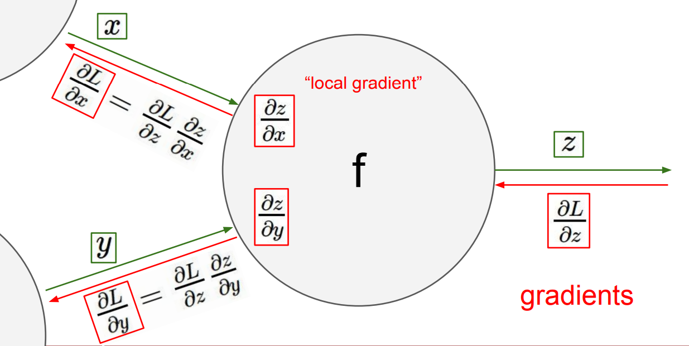
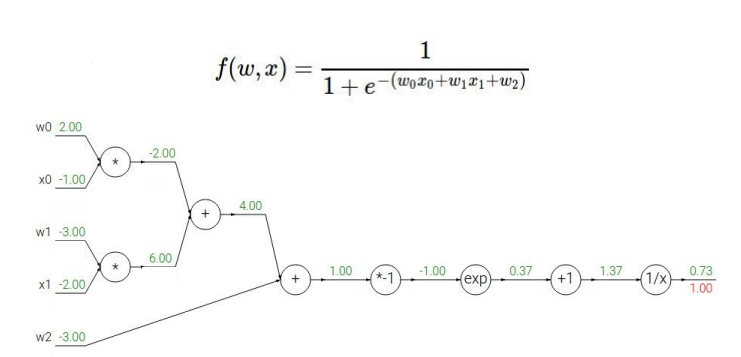
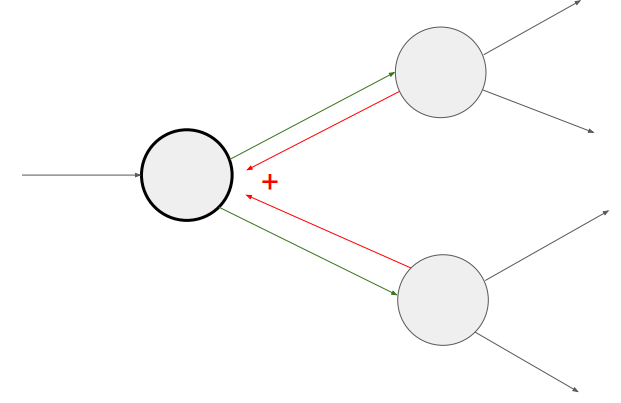
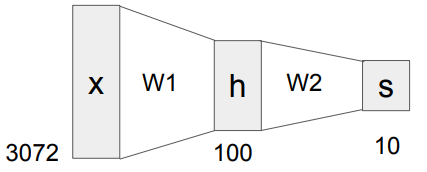

CS231n Lecture4 정리
Lecture 4 : Backpropagation and Neural Networks
Backpropagation이 무엇인지, 그리고 Gate를 어떻게 modularization하는지를 다루며, Neural Network에 대하여 간단하게 설명한다.
Backpropagation
각 변수의 편미분을 구하기 위하여, 알고 있는 “뒤쪽” 에서부터 거슬러 올라간다. 기본적인 원리는 Chain Rule 이다.

쉽게 해석하면, 뒤에서 들어온 편미분 값 $\times$ local 편미분 값 을 해주면 된다!
Backpropagtion을 적용할 때 첫 단계는 아래와 같은 computational graph을 그리는 것이다.

이후 차근차근 거슬러 올라가면서 계산해주면 된다! (backward flow) 특수한 케이스 몇 개는 다음과 같다:
- add gate: gradient distributor (같은 값이 뒤로 전달됨)
- max gate: gradient router (max 값만이 앞쪽으로 전달됨)
- mul gate: gradient switcher (앞에서 넘어온 값과 상대 노드 입력값이 뒤쪽으로 전달됨)
뒤로 전달되는 과정 중, 다음과 같이 모아진다면 (branch) gradient들은 더해진다!

Modularized Implementation
한 종류의 Gate는 Forward / Backward API를 가진 하나의 모듈로 modularization 할 수 있다.
1 | class MyGate(): # x, y --> z |
Neural Networks
기본적인 Neural Network에 대하여 소개하였다. 아래와 같은 $ f = W_2 \max (0, W_1 x) $ 형태의 2-layer Neural Network을 살펴보자.

이 경우에서는 max 함수가 non-linearity를 보장해준다. (linear classification의 단점 보완!)
자동차를 분류하는 모델을 가정해보자. Train data에 빨간색 차가 많았다면, $W_1$ 에서 빨간 차들이 high score를 가지고 있을 것이다. 이대로 모델 학습을 끝낸다면 (linear classifier), 이 모델은 빨간 차는 잘 식별하겠지만 다른 색깔의 차는 식별에 어려움을 겪는다. $W_2$ 에서 다양한 template에 대하여 combine하고 모델의 score 함수 값들을 조정해주면, 최종적으로 다른 색의 차도 식별에 유리해진다!
CS231n Lecture4 정리
http://yxxshin.github.io/2022/07/25/2022-07-25-CS231n-Lecture4/